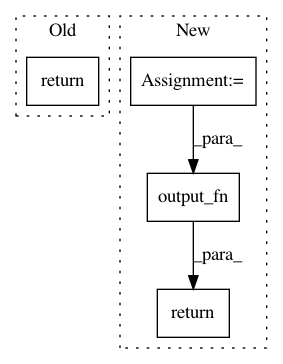

bfd0068e7a0922c06cdeff346a6c6339f98ae256,python/eight_mile/tf/layers.py,BiLSTMEncoder1,call,#BiLSTMEncoder1#Any#,809
Before Change
with tf.name_scope(self.name), tf.variable_scope(self.name):
rnnout, (fwd_state, backward_state) = tf.nn.bidirectional_dynamic_rnn(self.fwd_rnn, self.bwd_rnn, inputs, sequence_length=lengths, dtype=tf.float32)
rnnout = tf.concat(axis=2, values=rnnout)
return self.output_fn(rnnout, ((fwd_state[-1].h, fwd_state[-1].c), (backward_state[-1].h, backward_state[-1].c)))
@property
def requires_length(self):
return self._requires_length
After Change
h = tf.concat([fw_state[i].h, bw_state[i].h], -1)
c = tf.concat([fw_state[i].c, bw_state[i].c], -1)
encoder_state.append(tf.contrib.rnn.LSTMStateTuple(h=h, c=c))
encoder_state = tuple(encoder_state)
return self.output_fn(rnnout, encoder_state)
def output_fn(self, out, state):
return out, state
In pattern: SUPERPATTERN
Frequency: 4
Non-data size: 4
Instances
Project Name: dpressel/mead-baseline
Commit Name: bfd0068e7a0922c06cdeff346a6c6339f98ae256
Time: 2019-11-19
Author: blester125@gmail.com
File Name: python/eight_mile/tf/layers.py
Class Name: BiLSTMEncoder1
Method Name: call
Project Name: dpressel/mead-baseline
Commit Name: 71bd73748b835de5ae20bdc90ce4321e47f4c2b2
Time: 2019-09-25
Author: dpressel@gmail.com
File Name: python/eight_mile/tf/layers.py
Class Name: CRF
Method Name: call
Project Name: SheffieldML/GPy
Commit Name: 9976e56bead213c7095b80ce34a11390a4c33fe6
Time: 2015-03-23
Author: james.hensman@gmail.com
File Name: GPy/mappings/mlp.py
Class Name: MLP
Method Name: f
Project Name: dpressel/mead-baseline
Commit Name: 71bd73748b835de5ae20bdc90ce4321e47f4c2b2
Time: 2019-09-25
Author: dpressel@gmail.com
File Name: python/eight_mile/tf/layers.py
Class Name: MultiHeadedAttention
Method Name: call